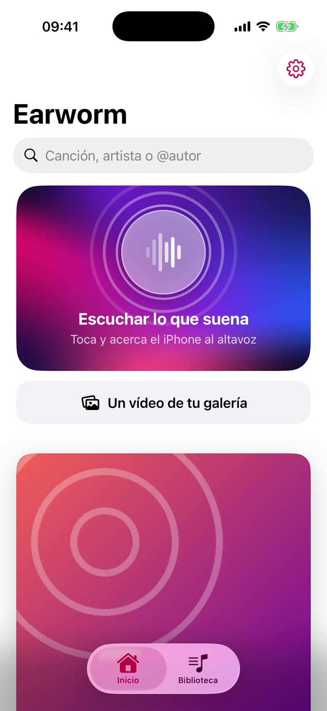
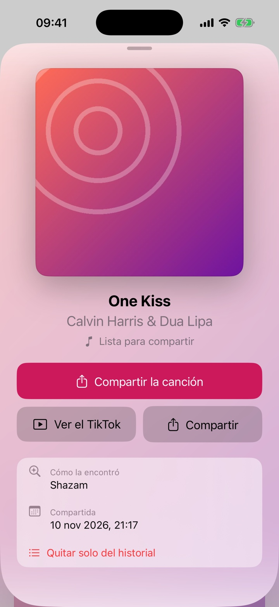
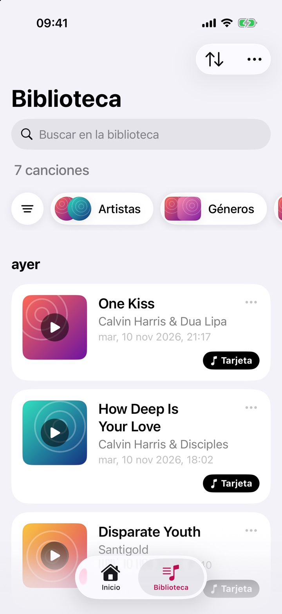

What's that song? Earworm hears it.
An iPhone app. Send it a TikTok, a YouTube video or a SoundCloud link and it tells you which song is playing, including sped-up edits and remixes.
- iPhone, iOS 17 or later
- No account, no server
- App Store, to be announced
- One KissCalvin Harris & Dua Lipa
- How Deep Is Your LoveCalvin Harris & Disciples
- Disparate YouthSantigold
- BulletproofLa Roux & Lumarii
- EmotionsJul
What the home screen fills up with. The songs are real. The covers are placeholders: no record artwork is shown on this page.
It starts at the Share button.
You never open Earworm first. In the app where the video is playing, tap Share and pick Earworm. A sheet slides up, searches and shows the song.
- A linkTikTok, YouTube, YouTube Music or SoundCloud.
- A videoAny clip saved in Photos, with Un vídeo de tu galería.
- The roomEscuchar lo que suena listens through the microphone for 15 seconds.

The version that is actually in the video.
A TikTok rarely plays the song as released. It is sped up, slowed down, or a DJ's own remix. Earworm listens to three slices of the audio with Apple's ShazamKit and notices when the pitch has been shifted.
When Shazam is unsure, it reads the name of the TikTok sound and the comments, and trusts a title only when at least two people give the same one. If the remix was never released, it says so and keeps the original.
- 3slices of the audio
- 11.5 seach one
- 2people must agree
Every find becomes a card.
Cover, title and artist, plus how Earworm got there and the video it came from. Oír un trozo plays 20 seconds so you can check it is the one.
Wrong song? Buscar otra vez looks for a different one and remembers the ones you turned down.

A library you can filter.
Earworm keeps the last 500 songs. Filter them by artist, genre, mood or decade, or search by song, artist or the @account that posted the video.
Spotify is optional. Connected, each song also goes to your Liked Songs. Connecting takes your own Spotify developer Client ID and a Premium account, so setup takes a while.

It keeps to itself.
Earworm has no server of its own. What it finds lives on your iPhone and goes when you delete the app.
- No account
- No sign-up, no ads and no analytics. The history and the covers are stored on the phone.
- It only names the song
- It does not download it, upload it or host it anywhere. The short clip it listens to is deleted after each search.
- Only public pages
- It reads the public page of the video you send, asks Apple for the cover and, if you connect it, talks to Spotify. The detail is in the privacy policy, in Spanish.
Help
Something not working? Write to me with the link you sent and what the screen said. I answer within 48 hours, in English or Spanish.
nsanbenitop@gmail.com- Do I need Spotify?
- No. Without it Earworm still tells you the song and keeps the card.
- How do I delete a song?
- Press and hold it, then Borrar canción. With Spotify connected that also takes it out of your Liked Songs. Quitar solo del historial leaves Spotify alone.
- It did not find the song.
- Some videos use an original sound with no name. Try another video with the same track, or let it listen through the microphone.
- Does it work with Instagram?
- Not from a link: Instagram does not let apps read a Reel. Save the Reel to Photos and pick it with Un vídeo de tu galería.
- Is the app in English?
- Not yet. Every screen is in Spanish for now, which is why the button names on this page are in Spanish.
A personal tool. To be announced.
I built Earworm for the songs I kept losing in short videos, and it runs on my iPhone today. There is no release date yet: the download link goes here the day Apple approves it.